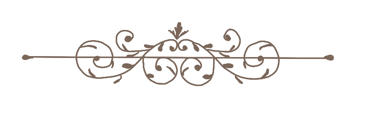

Restructuring Hackathons in the Age of AI
As LLMs continue to democratize software development, how can hackathons be adapted to serve a greater purpose within the tech community?
June 2026 · 30 Min Read

Typically in a hackathon, teams of up to 4 people compete to win thousands of dollars to create a software project, like an app, according to a certain theme within 24 to 48 hours. With such a short period of time, these projects are meant to be a prototype of a working product as opposed to a deployable app. Some of the largest collegiate hackathons in Silicon Valley include CalHacks at the University of California, Berkeley and TreeHacks at Stanford University, with hundreds of thousands of dollars in prizes and feature keynote speakers of top voices in tech, like Sam Altman, the CEO of OpenAI, the company behind of ChatGPT, and Gary Tan, the founder of Y Combinator, a startup accelerator that incubated companies such as Airbnb, Reddit, and Doordash.
A hackathon space typically consists of hundreds of individuals crammed up in a recreation gym staring at a screen, kind of like a makeshift computer science convention. There are industry mentors that walk around helping people on their projects, or trying to recruit for their company. In a usual hackathon team, one person would work on the frontend, another person works on design, someone else would do backend, and the last person would be there to fake features for the panel of judges, all while everyone consumes gluttonous amounts of free snacks.